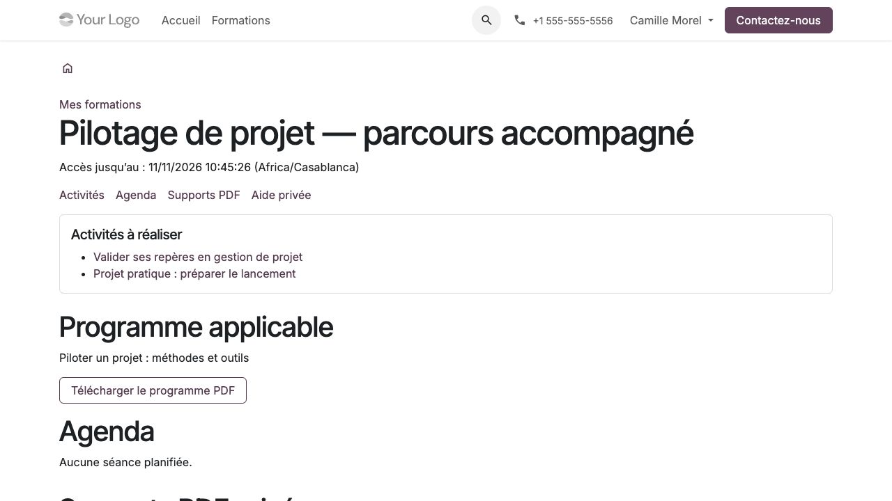

Suivre sa formation
Profil : participant avec son compte personnel associé à une inscription. Le compte utilisé doit être celui que la coordination a rattaché à l’inscription.
Ouvrir son espace
Se connecter, ouvrir Mon compte, puis Mes formations.
Choisir son inscription. Vérifier le programme applicable et la date de fin d’accès.
Lire les activités à réaliser, les préalables et les consignes.
Consulter l’agenda pour le lieu, le lien distant et les horaires affichés.
Ouvrir Supports PDF et télécharger les fichiers autorisés.


La fiche rassemble les ressources utiles à une inscription.
Une formation autonome n’affiche pas de séance fictive. Une inscription peut être confirmée sans accès encore ouvert : autorisation, dates et prérequis du parcours doivent aussi être satisfaits. Demander à la coordination de vérifier ces éléments si la formation attendue manque.
Réaliser les activités et déposer un travail
Ouvrir une activité et lire le critère de réalisation annoncé.
Effectuer le travail demandé. Une consultation, une remise, une validation du tuteur ou un seuil d’évaluation correspondent à des critères différents.
Pour une remise, renseigner le texte et/ou choisir le fichier demandé, dans la limite de 20 Mo.
Envoyer et vérifier le message de confirmation ainsi que le travail affiché.
Relire le retour du tuteur. Si une révision est demandée, effectuer une nouvelle remise ; les versions précédentes restent conservées.
Télécharger un PDF n’enregistre pas automatiquement une progression, une présence ou un acquis. Un projet avec grille peut revenir à l’état incomplet après nouvelle remise ou demande de révision ; seule l’acceptation requise le rend à nouveau complet. Voir Préparer les supports, activités et projets.
En cas de fichier refusé, lire l’erreur, conserver le texte affiché et choisir un fichier conforme avant de renvoyer. Vérifier la confirmation avant de quitter la page. Les fichiers et échanges individuels restent réservés aux personnes habilitées.
Utiliser l’aide et le tutorat
Depuis la formation, utiliser l’aide privée pour une question à son tuteur. Éviter de placer des données de tiers ou des informations sensibles inutiles dans les travaux. L’employeur ne reçoit pas automatiquement ces échanges.
Si une prestation de réservation est incluse, ouvrir Réservations de tutorat :
Vérifier le quota disponible, la durée et le fuseau des créneaux proposés.
Lire les conditions d’annulation et de restitution d’unité.
Choisir un créneau et confirmer une seule fois, puis contrôler la réservation.
Pour annuler, le faire avant le début ; après le début, contacter la coordination.
Chaque confirmation consomme une unité, quelle que soit la durée. Une annulation libère la place avant le début ; elle restitue l’unité seulement selon la règle annoncée. Si la coordination annule le créneau, les unités des réservations encore confirmées sont restituées. Une réservation ne vaut pas présence.
Autres actions et historiques
Depuis l’espace personnel, retrouver :
Mes parcours : étapes, progression et conditions d’accès ;
Mes présences : déclarations par demi-journée, détaillées dans Déclarer et contrôler les présences ;
les examens blancs et Mes tentatives, détaillés dans Configurer et passer les examens blancs ;
Mes évaluations de formation, détaillées dans Évaluer les acquis et recueillir les retours ;
plans de mise en pratique, demandes de publication et réclamations, détaillés dans Accompagner après la formation et publier un avis et Gérer la qualité et les dossiers confidentiels ;
Mes documents de formation pour les documents délivrés et autorisés.
L’expiration des supports n’efface pas les résultats historiques et ne suit pas nécessairement les mêmes règles que les attestations, plans après formation ou réclamations. Une suspension ou révocation peut bloquer aussi ces accès selon leur règle propre. Un ancien lien ne contourne pas un retrait de droit.